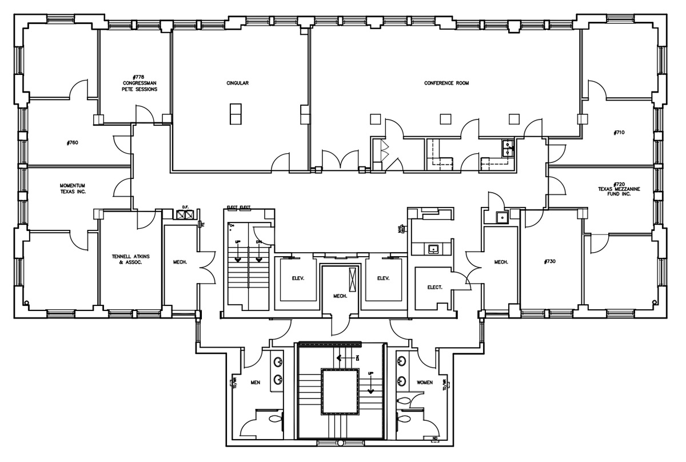

  <div class="col-xs-12 no-padding">
    <div id="myCarousel" class="carousel slide myCarousel" ng-if="maps.length">
      <ol class="carousel-indicators" style="left: 0; margin: 0; width: 100%; bottom: 0; background-color: rgba(0, 0, 0, 0.3);">
        <li ng-repeat="map in maps" data-target=".myCarousel" ng-class="{'active' : map.i == profile.map.i}"></li>
      </ol>
      <!-- Wrapper for slides -->
      <div class="carousel-inner" role="listbox">
        <div class="item" ng-repeat="map in maps" ng-class="{'active' : map.i == profile.map.i}">
          <div class="map"  ng-init="getMapMarker(map)" ng-click="openMap($event, map); $event.stopPropagation();" ng-mousemove="onDrag($event)" ng-mouseup="onDrop($event)" ng-mouseleave="onDrop();" style="padding-left: 0%; padding-right: 0%;">
            
            <!-- draggable marker -->
            <div class="marker" ng-repeat="marker in map.markers" ng-style="{'left': marker.left, 'top': marker.top}" ng-class="[marker.data.online ? 'online':'offline', marker.subscribed ? 'subscribed' : 'unsubscribed']" ng-mousedown="onStartDrag(map, marker)" ng-mouseup="onDrop(); $event.stopPropagation();">
              <button class="marker-icon" ng-style="marker.style" ng-class="marker.hasImg ? 'hasImg' : 'noImg'">
                {{marker.info}}
              </button >
              <div class="marker-label"><small>{{marker.name}}</small></div>
            </div>
          </div>
        </div>
        <!--
        <div class="item active" style="padding-left: 0%; padding-right: 0%;">
          <div class="map" ng-repeat="map in maps | filter: {i : profile.map.i}" ng-click="openMap($event, map); $event.stopPropagation();">
            
            <div class="marker" ng-init="getMapMarker(map)" ng-repeat="marker in map.markers" ng-style="marker.position">
              <button ng-click="editMapMarker(map, marker); $event.stopPropagation();" ng-class="marker.class" ng-style="marker.style">
                {{marker.info}}
              </button >
              <div ng-click="editMapMarker(map, marker); $event.stopPropagation();" style="font-size: 6px; text-align: center; left: -50%; margin-top: 0px; padding:3px; background: #fff; opacity: 0.8; position: relative;">{{marker.shortname}}</div>
            </div>
          </div>
        </div>
      -->
    </div>
    <!-- Left and right controls -->
    <a class="left carousel-control" href=".myCarousel" role="button" data-slide="prev">
      <span class="glyphicon glyphicon-chevron-left" aria-hidden="true"></span>
      <span class="sr-only">Previous</span>
    </a>

    <a class="right carousel-control" href=".myCarousel" role="button" data-slide="next">
      <span class="glyphicon glyphicon-chevron-right" aria-hidden="true"></span>
      <span class="sr-only">Next</span>
    </a>
  </div>

  <div ng-if="maps.length == 0" style="height: 250px;">
    <div class="panel panel-default" style="height: 100%;">
      <div class="panel-body" ngf-select="imageCrop($file, {type:'maps', type_id:getUnuseMap()})">
        <h3 class="panel-title">Upload Floor Plan Image</h3>
        
      </div>
    </div>
  </div>
</div>
</div>